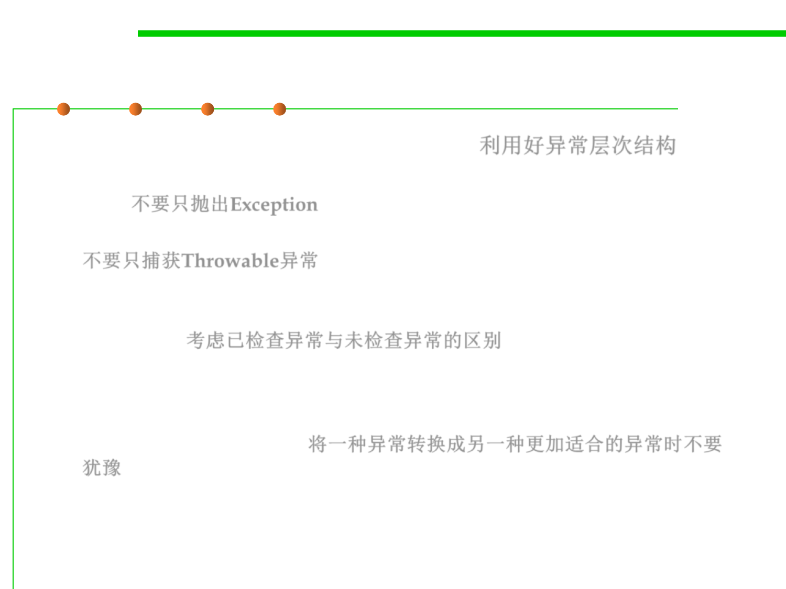

7.2 Error and Exception Handling
Make good use of the exception hierarchy
▪ Make good use of the exception hierarchy. 利用好异常层次结构
– Don’t just throw an Exception. Find an appropriate subclass or create your
own. 不要只抛出Exception
– Don’t just catch Throwable. It makes your code hard to read and maintain.
不要只捕获Throwable异常
– Respect the difference between checked and unchecked exceptions.
Checked exceptions are inherently burdensome—don’t throw them for
logic errors.考虑已检查异常与未检查异常的区别
– Do not hesitate to turn an exception into another exception that is more
appropriate. For example, when you parse an integer in a file, catch the
NumberFormatException and turn it into a subclass of IOException or
MySubsystemException. 将一种异常转换成另一种更加适合的异常时不要
犹豫